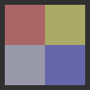

Grid
Positions its children in grid formation More...
Inherits Item
Properties
- add : Transition
- columnSpacing : qreal
- columns : int
- effectiveLayoutDirection : enumeration
- flow : enumeration
- layoutDirection : enumeration
- move : Transition
- populate : Transition
- rowSpacing : qreal
- rows : int
- spacing : qreal
Detailed Description
Grid is a type that positions its child items in grid formation.
A Grid creates a grid of cells that is large enough to hold all of its child items, and places these items in the cells from left to right and top to bottom. Each item is positioned at the top-left corner of its cell with position (0, 0).
A Grid defaults to four columns, and creates as many rows as are necessary to fit all of its child items. The number of rows and columns can be constrained by setting the rows and columns properties.
For example, below is a Grid that contains five rectangles of various sizes:
import QtQuick 2.0 Grid { columns: 3 spacing: 2 Rectangle { color: "red"; width: 50; height: 50 } Rectangle { color: "green"; width: 20; height: 50 } Rectangle { color: "blue"; width: 50; height: 20 } Rectangle { color: "cyan"; width: 50; height: 50 } Rectangle { color: "magenta"; width: 10; height: 10 } }
The Grid automatically positions the child items in a grid formation:
If an item within a Column is not visible, or if it has a width or height of 0, the item will not be laid out and it will not be visible within the column. Also, since a Grid automatically positions its children, a child item within a Grid should not set its x or y positions or anchor itself with any of the anchor properties.
For more information on using Grid and other related positioner-types, see Item Layouts.
See also Flow, Row, Column, Positioner, and Positioners example.
Property Documentation
add : Transition |
This property holds the transition to be run for items that are added to this positioner. For a positioner, this applies to:
- Items that are created or reparented as a child of the positioner after the positioner has been created
- Child items that change their Item::visible property from false to true, and thus are now visible
The transition can use the ViewTransition property to access more details about the item that is being added. See the ViewTransition documentation for more details and examples on using these transitions.
Note: This transition is not applied to the items that already part of the positioner at the time of its creation. In this case, the populate transition is applied instead.
See also populate, ViewTransition, and Positioners example.
columnSpacing : qreal |
This property holds the spacing in pixels between columns.
If this property is not set, then spacing is used for the column spacing.
By default this property is not set.
This property group was introduced in QtQuick QtQuick2.0.
See also rowSpacing.
columns : int |
This property holds the number of columns in the grid. The default number of columns is 4.
If the grid does not have enough items to fill the specified number of columns, some columns will be of zero width.
effectiveLayoutDirection : enumeration |
This property holds the effective layout direction of the grid.
When using the attached property LayoutMirroring::enabled for locale layouts, the visual layout direction of the grid positioner will be mirrored. However, the property layoutDirection will remain unchanged.
See also Grid::layoutDirection and LayoutMirroring.
flow : enumeration |
This property holds the flow of the layout.
Possible values are:
- Grid.LeftToRight (default) - Items are positioned next to each other in the layoutDirection, then wrapped to the next line.
- Grid.TopToBottom - Items are positioned next to each other from top to bottom, then wrapped to the next column.
layoutDirection : enumeration |
This property holds the layout direction of the layout.
Possible values are:
- Qt.LeftToRight (default) - Items are positioned from the top to bottom, and left to right. The flow direction is dependent on the Grid::flow property.
- Qt.RightToLeft - Items are positioned from the top to bottom, and right to left. The flow direction is dependent on the Grid::flow property.
See also Flow::layoutDirection, Row::layoutDirection, and Layout directions example.
move : Transition |
This property holds the transition to run for items that have moved within the positioner. For a positioner, this applies to:
- Child items that move when they are displaced due to the addition, removal or rearrangement of other items in the positioner
- Child items that are repositioned due to the resizing of other items in the positioner
The transition can use the ViewTransition property to access more details about the item that is being moved. Note, however, that for this move transition, the ViewTransition.targetIndexes and ViewTransition.targetItems lists are only set when this transition is triggered by the addition of other items in the positioner; in other cases, these lists will be empty. See the ViewTransition documentation for more details and examples on using these transitions.
Note: In QtQuick 1, this transition was applied to all items that were part of the positioner at the time of its creation. From QtQuick 2 onwards, positioners apply the populate transition to these items instead.
See also add, ViewTransition, and Positioners example.
populate : Transition |
This property holds the transition to be run for items that are part of this positioner at the time of its creation. The transition is run when the positioner is first created.
The transition can use the ViewTransition property to access more details about the item that is being added. See the ViewTransition documentation for more details and examples on using these transitions.
See also add, ViewTransition, and Positioners example.
rowSpacing : qreal |
This property holds the spacing in pixels between rows.
If this property is not set, then spacing is used for the row spacing.
By default this property is not set.
This property group was introduced in QtQuick QtQuick2.0.
See also columnSpacing.
rows : int |
This property holds the number of rows in the grid.
If the grid does not have enough items to fill the specified number of rows, some rows will be of zero width.
spacing : qreal |
The spacing is the amount in pixels left empty between adjacent items. The amount of spacing applied will be the same in the horizontal and vertical directions. The default spacing is 0.
The below example places a Grid containing a red, a blue and a green rectangle on a gray background. The area the grid positioner occupies is colored white. The positioner on the left has the no spacing (the default), and the positioner on the right has a spacing of 6.
